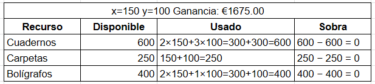

Grupo 2
Dante Passone
Braian Tormey
Enunciado del problema
Con el comienzo del curso se van a lanzar unas ofertas de material escolar. Unos almacenes quieren ofrecer 600 cuadernos, 500 carpetas y 400 bolígrafos para la oferta, empaquetándolo de dos formas distintas: en el primer bloque pondrán 2 cuadernos, 1 carpeta y 2 bolígrafos; en el segundo, pondrán 3 cuadernos, 1 carpeta y 1 bolígrafo. Los precios de cada paquete serán de 6,5 euros y 7 euros, respectivamente. ¿Cuántos paquetes les conviene hacer de cada tipo para obtener los máximos beneficios?
Datos identificados
- Stock disponible:
- 600 cuadernos
- 500 carpetas
- 400 bolígrafos
- Paquete tipo 1: 2 cuadernos, 1 carpeta, 2 bolígrafos, precio: €6,5
- Paquete tipo 2: 3 cuadernos, 1 carpeta, 1 bolígrafo, precio: €7
El objetivo es maximizar la ganancia respetando el stock disponible.
Límites y restricciones
- 2x + 3y ≤ 600
La cantidad de cuadernos que uses entre los dos tipos de paquetes no puede pasar los 600. - x + y ≤ 500
No puedo usar más de 500 carpetas entre todos los paquetes. - 2x + y ≤ 400
La suma de todos los bolígrafos usados tiene que ser como mucho 400. - x ≥ 0 y y ≥ 0
Restricción de no negatividad: no se pueden fabricar cantidades negativas.
Resolviendo con Python
Ahora, utilizando Python y haciendo uso de la librería PuLP,
que sirve para modelar y resolver problemas de optimización mediante programación lineal, vamos a buscar la solución óptima.
Preparar el entorno
# Paso 1: Instalar PuLP
!pip install pulp
# Paso 2: Importar la librería
import pulp
Definir el modelo en Python
Paso 3: Crear el problema de maximización
problema = pulp.LpProblem("Problema_Paquetes_Escolares", pulp.LpMaximize)
Paso 4: Definir las variables de decisión
x = pulp.LpVariable('Paquetes_Tipo_1', lowBound=0, cat='Integer') # cantidad de paquetes tipo 1
y = pulp.LpVariable('Paquetes_Tipo_2', lowBound=0, cat='Integer') # cantidad de paquetes tipo 2
Paso 5: Definir la función objetivo
problema += 6.5 * x + 7 * y, "Ganancia_Total"
Restricciones y resolución
Paso 6: Agregar las restricciones
problema += 2 * x + 3 * y <= 600, "Restriccion_Cuadernos"
problema += x + y <= 500, "Restriccion_Carpetas"
problema += 2 * x + y <= 400, "Restriccion_Bolígrafos"
Paso 7: Resolver el problema
problema.solve()
Ver el resultado
Paso 8: Mostrar los resultados
if pulp.LpStatus[problema.status] == "Optimal":
print(" Solución óptima encontrada:")
print(f" Paquetes tipo 1 a fabricar: {x.varValue}")
print(f" Paquetes tipo 2 a fabricar: {y.varValue}")
print(f" Ganancia total: €{pulp.value(problema.objective):.2f}")
else:
print(" No se encontró una solución óptima.")
Solucion optima obtenida
- Paquetes tipo 1 a fabricar: 150.0
- Paquetes tipo 2 a fabricar: 100.0
- Ganancia total: €1675.00
Visualización gráfica del problema
Este gráfico muestra las restricciones, la región factible, la solución óptima y el punto donde se alcanza la ganancia máxima.
Cuadernos — Carpetas — Bolígrafos

Posibles mejoras
una mejora podria ser aumentar el stock de bolígrafos (+50), siendo que este es el recurso más limitado. Aumentarlo permitiría crear más paquetes del tipo 1, que son los que más ganancia dan.

Gráfico actualizado

Recorte de stock
En ambos casos se observa un gran sobrante de carpetas. Reducir su cantidad no generaría más ganancias, pero sí permitiría ahorrar costos, tanto en la compra como en el almacenamiento.
Gráfico actualizado